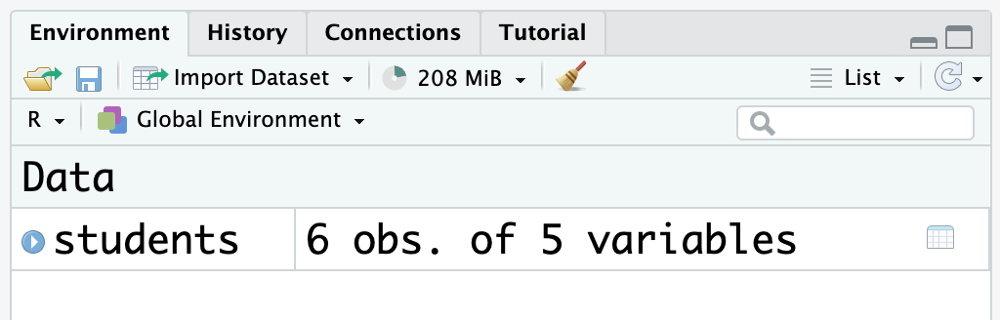

getwd()getwd()2024-04-16
https://data-science-chiba-2024.github.io/day3/
今までは直接Rにコマンドを出していたけど、毎回そうするのは効率が良くない。
作業を繰り返す場合や再現する場合はスクリプト(テキストファイル)が必要。
Rスクリプトの拡張は.Rか.r。
File ➡︎ New File ➡︎ R ScriptをクリックFile ➡︎ Save As...をクリックかファイルのアイコンをクリック。以下のコードをスクリプトに書いて、script.Rとしてデスクトップに保存しましょう（コードの詳細はまた後で学ぶ）。
library(tidyverse)
ggplot(diamonds, aes(x = carat, y = price)) +
geom_hex()library(tidyverse)
ggplot(diamonds, aes(x = carat, y = price)) +
geom_hex()カーソルが現在位置している行をコンソールに送る：Ctrl（あるいは⌘） + Enter
今開いているスクリプトの行を全てコンソールに送る：Ctrl（あるいは⌘） + Shift+ Enter
スクリプトに間違いが入っている場合、RStudioはそれを教えてくれる（バツマークと赤い線）：

読みやすさと覚えやすさを優先しましょう。
Rは大文字と小文字を区別するので、小文字に揃えた方が覚えやく、間違いが少ない（例えば、Dataではなく、data）。
変数名にはスペースが使えないので、_を使いましょう（例えば、data_set_1など）。
#で書く
# this is a commentNG ❌
alternative model.R
code for exploratory analysis.r
finalreport.qmd
FinalReport.qmd
fig 1.png
Figure_02.png
model_first_try.R
run-first.r
temp.txtOK ✅
01_load_data.R
02_exploratory_analysis.R
03_model_approach_1.R
04_model_approach_2.R
fig_01.png
fig_02.png
report_2022_03_20.qmd
report_2022_04_02.qmd
report_draft_notes.txtスクリプトとしてコードを保存をするのはいいけど、解析が進むと複数のスクリプトとデータを整理する必要が生じる
RStudioの「Project」機能によって、スクリプトとデータ（など）の整理ができる
File ➡︎ New Project ➡︎ New Directory ➡︎ New Project をクリック
r4dsにしましょう）
プロジェクト名の入力が終わると、RStudioが再度立ち上がる
ファイルパネル（右下）をよく見てください。今はRがどこに「います」か？
dataというフォルダーを作りましょう
新しいプロジェクトには、r4ds.Rprojファイルが入っている
.Rprojファイルの中身はは基本的に触らない


「作業ディレクトリ」（“working directory”）というのは、今Rが今「いる」場所のこと
getwd()で確認できる：
getwd()getwd()[1] "/Users/joelnitta/Desktop/r4ds"set.wd()という関数を目にする
set.wd("/Users/joelnitta/analysis/").Rprojを使えば、set.wd()を使う必要がないset.wd()は使わないようにしましょう。以下のコードを書いて、スクリプトをdiamonds.Rとしてr4dsプロジェクトに保存して、実行しましょう：
library(tidyverse)
ggplot(diamonds, aes(x = carat, y = price)) +
geom_hex()
ggsave("diamonds.png")
write_csv(diamonds, "data/diamonds.csv")library(tidyverse)
ggplot(diamonds, aes(x = carat, y = price)) +
geom_hex()
ggsave("diamonds.png")
write_csv(diamonds, "data/diamonds.csv")このスクリプトは何をするのでしょうか？
diamonds.Rはdiamonds.pngというグラフを作る。. . .
. . .
diamonds.pngを消しましょう。. . .
. . .
diamonds.Rを実行してください（Ctrl（あるいは⌘） + Shift+ Enter）. . .
. . .
. . .
. . .
データ整理やプロジェクトの管理はどうしていますか？
Moodleからstudents.csvをダウンロードして、data/に置きましょう。
.csvはcomma separated valuesの略です
.xslxとの違いは、.csvはそのままどのテキストエディターでも開ける（エクセルがいらない）read_csv()関数で読み込むまずは、読み込んでから直接に中身を見てみましょう：
read_csv("data/students.csv")Rows: 6 Columns: 5
── Column specification ────────────────────────────────────────────────────────────────────────────────────────────────────────────────────────────────────────────────────────────────────────────────────────────────────────────────────────────────────────────────────────────────────────────────────
Delimiter: ","
chr (4): Full Name, favourite.food, mealPlan, AGE
dbl (1): Student ID
ℹ Use `spec()` to retrieve the full column specification for this data.
ℹ Specify the column types or set `show_col_types = FALSE` to quiet this message.# A tibble: 6 × 5
`Student ID` `Full Name` favourite.food mealPlan AGE
<dbl> <chr> <chr> <chr> <chr>
1 1 Sunil Huffmann Strawberry yoghurt Lunch only 4
2 2 Barclay Lynn French fries Lunch only 5
3 3 Jayendra Lyne N/A Breakfast and lunch 7
4 4 Leon Rossini Anchovies Lunch only <NA>
5 5 Chidiegwu Dunkel Pizza Breakfast and lunch five
6 6 Güvenç Attila Ice cream Lunch only 6 でも、これだけではRの環境にそのデータが入っていません
変数（オブジェクト）として保存する必要がある：
students <- read_csv("data/students.csv")Rows: 6 Columns: 5
── Column specification ────────────────────────────────────────────────────────────────────────────────────────────────────────────────────────────────────────────────────────────────────────────────────────────────────────────────────────────────────────────────────────────────────────────────────
Delimiter: ","
chr (4): Full Name, favourite.food, mealPlan, AGE
dbl (1): Student ID
ℹ Use `spec()` to retrieve the full column specification for this data.
ℹ Specify the column types or set `show_col_types = FALSE` to quiet this message.
変数として保存する時は中身が見えない（オブジェクトに渡された）
中身を見たい時は変数名を直接コンソールに入力すればいい
studentsstudents# A tibble: 6 × 5
`Student ID` `Full Name` favourite.food mealPlan AGE
<dbl> <chr> <chr> <chr> <chr>
1 1 Sunil Huffmann Strawberry yoghurt Lunch only 4
2 2 Barclay Lynn French fries Lunch only 5
3 3 Jayendra Lyne N/A Breakfast and lunch 7
4 4 Leon Rossini Anchovies Lunch only <NA>
5 5 Chidiegwu Dunkel Pizza Breakfast and lunch five
6 6 Güvenç Attila Ice cream Lunch only 6 このような時に使う：データの中身を確認したい、ヘルプファイルを開きたい、など。
つまり、データ解析に必要ではない（関係のない）コマンド。
もう一つのデータの確認の仕方がある：「Environment」パネルでそのオブジェクトをクリック
すると、エクセルのようなレイアウトになる
. . .
. . .
studentsをコンソール（左下のパネル）でもう一回打ってみてください
データの上に<dbl>とか<chr>とかと出ているけど、これは何でしょうか？
. . .
. . .
dbl: 数字（“double”の略。なぜ”double”でしょう・・）chr: 文字（“character”の略。この方がしっくり来るね）このほかに、
lgl：ロジカル（TRUEかFALSEか、そのどっちか）int：整数（“integer”の略）がある
ベクトル（vector）とは、同じ型を持つ一連のデータの集まり（一次元の配列）
ベクトルに含まれている一つ一つのデータを要素（element）という
例えば、letters
"a"がlettersの１個目の要素c()
c(1, 2, 3)c(1, 2, 3)[1] 1 2 3c("a", "b", "c")c("a", "b", "c")[1] "a" "b" "c"typeof()関数でベクトルの型を確認することができるtypeof(letters)typeof(letters)[1] "character"c(1, 2, "c")c(1, 2, "c")先も言いましたが、あるベクトルの要素は全て同じ型を持たないといけない
なので、入力が複数の型を含む場合、Rはそれを同じ型に合わせる
x <- c(1, 2, "c")
typeof(x)x <- c(1, 2, "c")
typeof(x)[1] "character"データフレームの列は、本当はベクトルになっている
なので、データフレームの列はそれぞれ、型が決まっている

スクリプト（.Rファイル）に解析に必要なコードを書く
スクリプトとデータがあれば、解析結果を再現できる
プロジェクトを使うと、解析の管理が大幅にやりやすくなる
データフレームはベクトルからなっている
ベクトルは一つの型しか持てない
締め切り：2024-04-23 12:50